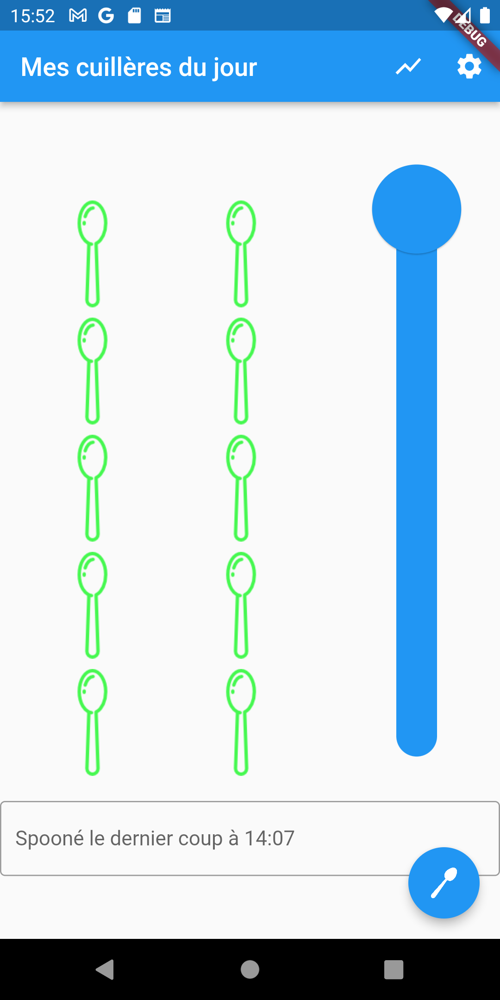
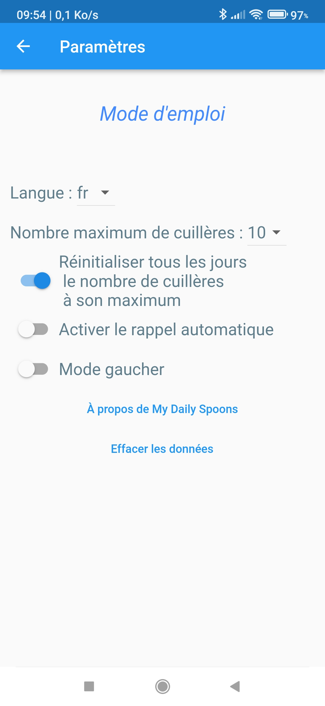

Mode d'emploi
My Daily Spoons est une petite application pour enregistrer des niveaux d'énergie ressentis au cours de la journée.Elle permet de plus d'associer à chaque enregistrement d'un niveau d'énergie un court texte désignant la cause ou l'évènement ayant conduit à ce niveau.
L'utilisation est très simple et tout peut être réalisé avec un seul pouce :
- on règle son niveau d'énergie actuel, compté en nombre de cuillères,
- on saisit un ou plusieurs mots associés à ce niveau d'énergie (facultatif),
- on enregistre la mesure
...et on recommence, plus tard, à un autre moment qui nous convient.

Pour régler le niveau d'énergie ou le nombre de cuillères, on déplace simplement verticalement le curseur (le gros rond bleu) jusqu'à la position voulue.
Pour associer une cause ou un évènement à ce nombre de cuillères, on appuie un coup sur la zone de texte sous les cuillères (le rectangle dans lequel est écrit "Spooné le dernier coup à 14:07" sur l'image de gauche). On y entre ensuite le texte.
Enfin, pour enregistrer ce nombre de cuillères et cet évènement, on tape un coup sur le bouton "Cuillère", c'est à dire le rond bleu contenant une cuillère en bas à droite.
Pour associer une cause ou un évènement à ce nombre de cuillères, on appuie un coup sur la zone de texte sous les cuillères (le rectangle dans lequel est écrit "Spooné le dernier coup à 14:07" sur l'image de gauche). On y entre ensuite le texte.
Enfin, pour enregistrer ce nombre de cuillères et cet évènement, on tape un coup sur le bouton "Cuillère", c'est à dire le rond bleu contenant une cuillère en bas à droite.
On peut saisir le texte, puis déplacer le curseur ou faire dans l'ordre inverse, comme bon nous semble.
On peut modifier les valeurs autant qu'on le souhaite, rien n'est enregistré tant que le bouton bleu "Cuillère" n'est pas pressé.
Quand on presse un coup sur le bouton bleu "Cuillère", le nombre de cuillères, le niveau d'énergie actuel et les mots inscrits dans la zone de texte sont enregistrés, mais aussi l'heure, la date et le nom du jour de la semaine.
On peut modifier les valeurs autant qu'on le souhaite, rien n'est enregistré tant que le bouton bleu "Cuillère" n'est pas pressé.
Quand on presse un coup sur le bouton bleu "Cuillère", le nombre de cuillères, le niveau d'énergie actuel et les mots inscrits dans la zone de texte sont enregistrés, mais aussi l'heure, la date et le nom du jour de la semaine.

Astuce
Un petit clavier apparaît quand on appuie un coup dans la zone de texte.
Au lieu de taper sur les lettres du clavier, on peut appuyer une fois sur l'icône représentant un petit micro alors placée sous le bouton bleu "Cuillère" et dicter oralement les mots qu'on souhaite associer au nombre de cuillères en cours.
Un petit clavier apparaît quand on appuie un coup dans la zone de texte.
Au lieu de taper sur les lettres du clavier, on peut appuyer une fois sur l'icône représentant un petit micro alors placée sous le bouton bleu "Cuillère" et dicter oralement les mots qu'on souhaite associer au nombre de cuillères en cours.
Si vous aimez cette application, n'hésitez pas à me soutenir pour que je continue à l'améliorer.
Note 1 : Appuyer sur la touche de validation ✓ du clavier fait simplement disparaître ce dernier, mais n'enregistre rien. Pour enregistrer un texte et un nombre de cuillères, il faut bien appuyer sur le bouton bleu "Cuillère".
Note 2 : Pour l'analyse statistique des enregistrements et le tracé des graphiques, seuls les mots d'au moins 4 lettres sont retenus.
L'analyse est plus pertinente quand les mêmes mots simples sont toujours utilisés pour désigner les mêmes choses.
Exemple : "faim", "bruit", "foule", "réunion" plutôt que "j'ai envie de manger", "j'ai faim", "il y a trop de monde", "trop bruyant ici", etc.
L'analyse est plus pertinente quand les mêmes mots simples sont toujours utilisés pour désigner les mêmes choses.
Exemple : "faim", "bruit", "foule", "réunion" plutôt que "j'ai envie de manger", "j'ai faim", "il y a trop de monde", "trop bruyant ici", etc.
Note 3 : Saisir son niveau d'énergie à intervalles réguliers (par exemple toutes les heures) ou chaque fois qu'il varie permet d'en suivre les évolutions, c'est à dire d'identifier d'une situation à l'autre, les gains ou les pertes d'énergie.
Si on ne saisit pas chaque variation ou pas régulièrement, mais uniquement certains niveaux à certains moments ponctuels dans la journée, alors les notions de gains ou de pertes ne seront plus pertinentes. Les graphiques mesurant des gains ou des pertes ne seront donc pas non plus pertinents.
Dans ce dernier cas, seuls les niveaux d'énergie, mais pas les variations de ces niveaux (gain/perte), seront significatifs.
Si on ne saisit pas chaque variation ou pas régulièrement, mais uniquement certains niveaux à certains moments ponctuels dans la journée, alors les notions de gains ou de pertes ne seront plus pertinentes. Les graphiques mesurant des gains ou des pertes ne seront donc pas non plus pertinents.
Dans ce dernier cas, seuls les niveaux d'énergie, mais pas les variations de ces niveaux (gain/perte), seront significatifs.
Paramètres
Pour accéder à l'écran des paramètres de l'application, il suffit de presser l'icôneOn accède alors à l'écran ci-dessous :

- Mode d'emploi : presser sur ce lien affiche cette page de documentation
- Langue : permet de choisir la langue de l'interface entre anglais (en) et français (fr)
- Nombre maximum de cuillères : permet de choisir le nombre de cuillères maximum quand le curseur est au plus haut. Les calculs de l'énergie seront toujours faits proportionnellement en tenant compte de cette valeur.
- Réinitialiser tous les jours le nombre de cuillères à son maximum : par défaut, le curseur reste à la dernière position enregistrée. Cette option permet de placer le curseur au maximum au premier lancement de l'application de la journée.
- Activer le rappel automatique : permet d'activer ou désactiver le rappel automatique qui émettra des notifications (voir plus bas pour son fonctionnement)
- Mode gaucher : place le curseur et le bouton "Cuillère" à gauche dans l'écran principal
- À propos de My Daily Spoons : affiche des informations sur la version de l'application
- Effacer les données : permet de supprimer toutes les données enregistrées jusqu'à présent
Fonctionnement du rappel automatique :
Quand le rappel automatique est activé, il est demandé de choisir à quelle fréquence et sur quelle plage horaire il doit intervenir, par exemple toutes les 2 heures chaque jour.
Le rappel est alors activé par défaut pour une semaine.
Chaque modification de l'un des paramètres du rappel (désactivation/ré-activation, modification de la fréquence ou de la plage horaire) relance sa planification pour une semaine à partir du moment de cette modification.
Quand le rappel est activé, une notification MySpoons est alors envoyée sur l'appareil à la fréquence désirée sur la plage horaire choisie, même si l'application n'est pas ouverte.
Désactiver le rappel automatique suffit à supprimer les notifications à venir.
Le rappel est alors activé par défaut pour une semaine.
Chaque modification de l'un des paramètres du rappel (désactivation/ré-activation, modification de la fréquence ou de la plage horaire) relance sa planification pour une semaine à partir du moment de cette modification.
Quand le rappel est activé, une notification MySpoons est alors envoyée sur l'appareil à la fréquence désirée sur la plage horaire choisie, même si l'application n'est pas ouverte.
Désactiver le rappel automatique suffit à supprimer les notifications à venir.
Visualisation des graphiques et données
Pour accéder à l'écran des graphiques et données de l'application, il suffit de presser l'icône dans la barre bleue de titre en haut.Pour que des graphiques puissent être tracés (ou pour que des données puissent être exportées), il est impératif qu'un certain nombre de données aient déjà été saisies, sans quoi les menus ci-dessous n'afficheront tout simplement rien du tout.
Rappel : les notions de gain ou de perte d'énergie ne sont pertinents que lorsque l'on saisit son niveau d'énergie soit à intervalle régulier, soit lors de chacune des variations ressenties de ce niveau d'énergie.
- Gains et pertes par situation : combinaison de la fréquence et l'intensité de chaque type de situation.
- Fréquences des situations : fréquences moyennes de chaque type de situation, indépendamment de leur intensité.
- Intensités des situations : intensités moyennes de chaque type de situation, indépendamment de leur fréquence.
- Gains et pertes par jour de la semaine : cumuls des intensités des pertes ou des gains par jour de la semaine.
- Nombre de situations par jour de la semaine : cumuls des nombres de situations par jour de la semaine.
- Gains et pertes par heure : cumuls des intensités des pertes ou des gains par heure, indépendamment des jours.
- Nombre de situations par heure : cumuls des nombres de situations par heure, indépendamment des jours.
- Évolution de l'énergie au cours du temps : courbe temporelle complète de la variation de l'énergie.
- Évolution de l'énergie en fonction des situations : courbe complète de la variation de l'énergie, indépendante du temps, mais en fonction de la succession des situations.
- Bouton Exportation des données : affiche l'écran d'exportation des données
Exportation des données
On accède à l'écran d'exportation en passant par l'écran le Menu Visualisation des graphiques et des données.Pour que des données puissent être exportées, il est impératif qu'un certain nombre de données aient déjà été saisies, sans quoi l'exportation ne produira aucun résultat.
- Enregistrer au format CSV : Cette action produit un fichier dont les données sont séparées par le caractère ";".
Les données enregistrées sont les suivantes :- Timestamp : la date et l'heure d'enregistrement de la donnée.
- WeekDay : le numéro du jour de la semaine. lun = 1, mar = 2, etc.
- EnergyRate : le niveau d'énergie, entre 0 et 100.
- SpoonNb : le nombre de cuillères saisi associé.
- maxSpoonNb : le nombre maximum de cuillères possible alors en vigueur.
- Comment : le commentaire saisi ou la description de la situation.
Il peut, par exemple, être ensuite envoyé comme pièce jointe par mail pour être ouvert sur un ordinateur dans un logiciel tableur comme Excel.
Le fichier peut aussi être lu par un simple "glisser-déposer" sur le site Charts de MySpoons afin d'afficher les graphqiues dans le navigateur. - Envoyer les données : Cette action requiert une connexion à l'Internet. Elle envoie les données de façon anonyme et sécurisée sur le serveur de l'application MySpoon.
Ces données peuvent ensuite globalement être analysées d'un point de vue statistique par des chercheurs ou des praticiens.
Il est recommandé de n'envoyer ses données qu'une seule fois, à la fin de son suivi, après quelques jours ou semaines de saisie.
Avant d'envoyer les données, il convient de renseigner quelques informations pour faciliter les traitements statistiques : l'année de naissance, le genre et langue utilisée pour décrire les situations.